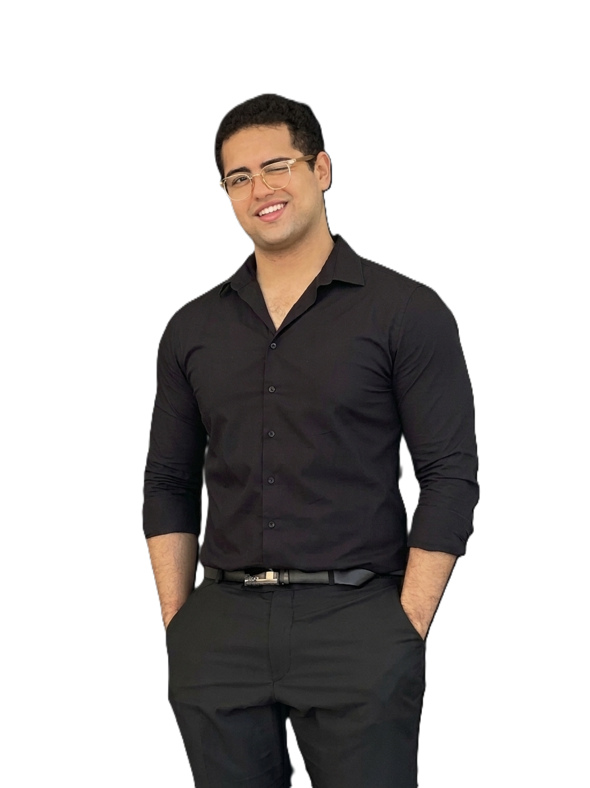

2024
InkVision OCR System
Multi-language OCR using PyTorch and custom attention mechanisms, paired with a scalable REST API for real-time mobile clients.
95% ACCURACY
I'm Ziad Hanafi, a final-year Computer Engineering student focused on computer vision, reliable ML pipelines, and shipping models beyond the notebook.

From multilingual recognition to edge-aware classification, I enjoy the engineering work that makes ML useful outside a demo.
Multi-language OCR using PyTorch and custom attention mechanisms, paired with a scalable REST API for real-time mobile clients.
End-to-end vision pipeline covering ingestion, augmentation, imbalance handling, training, and edge-optimized deployment for field hardware.
Independent automated visual defect detector using custom OpenCV preprocessing, contour detection, and morphological operations.
Expense management platform with a Flutter client, Node.js and MongoDB backend, real-time analytics, and secure authentication.
Building practical depth in AWS ML Engineering, MLOps, model versioning and monitoring, plus data engineering for scalable pipelines.
Evaluating generative AI outputs against logical and ethical frameworks, and authoring RLHF training data across ML and software engineering domains.
Built Power BI dashboards and data pipelines, developed C#/.NET backend modules, and applied AI ethics frameworks in a public-sector setting.
Founded a student tech incubator, mentored 20+ peers in robotics and software engineering, and grew the community by 150%.
My strongest lane is computer vision. I pair model development with the data, backend, and deployment skills needed to deliver complete systems.
I'm always interested in thoughtful ML work, ambitious student teams, and opportunities to keep building at the edge of AI.